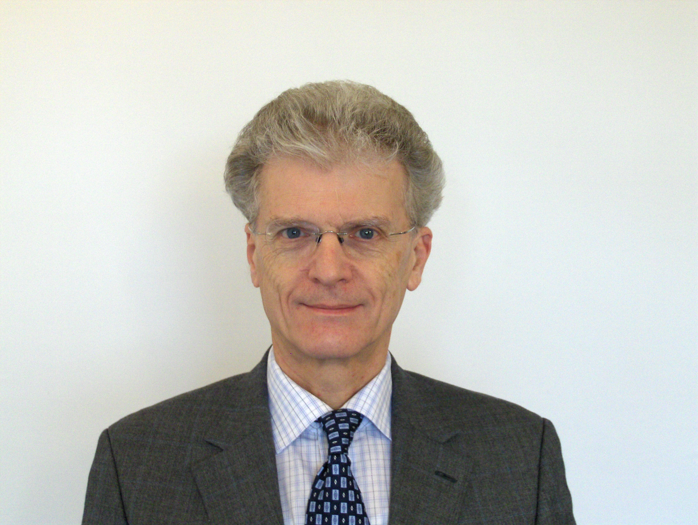

Professor E Brian Davies, FRS
|
PROGRAMME:
Room K2.31 (Nash Lecture Theatre)
10:00-10:50 Lyonell Boulton (Edinburgh),
Bases of dilated periodic functions
10:50-11:30 Coffee (in Common Room S5.21)
11:30-12:20 Francoise Tisseur (Manchester),
Exploiting tropical algebra in numerical linear algebra
12:20-14:00 Lunch
14:00-14:50 Leonid Pastur (Kharkov),
Analogs of Szegő theorems for ergodic operators
15:00-15:50 Mathieu Lewin (Paris),
Strichartz inequality for orthonormal functions and its applications
15:50-16:30 Tea (in Common Room S5.21)
16:30-17:20 Gerassimos Barbatis (Athens),
On the Hardy constant of certain non-convex planar domains
17:30-18:20 Elliott H. Lieb (Princeton),
Indirect Coulomb Energy with Gradient Correction
18:20-18:30 Brian Davies (London),
Concluding remarks
19:15: dinner at Tas restaurant (33 The Cut, London SE1 8LF)
|